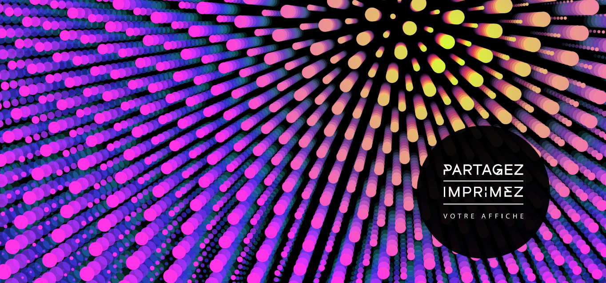
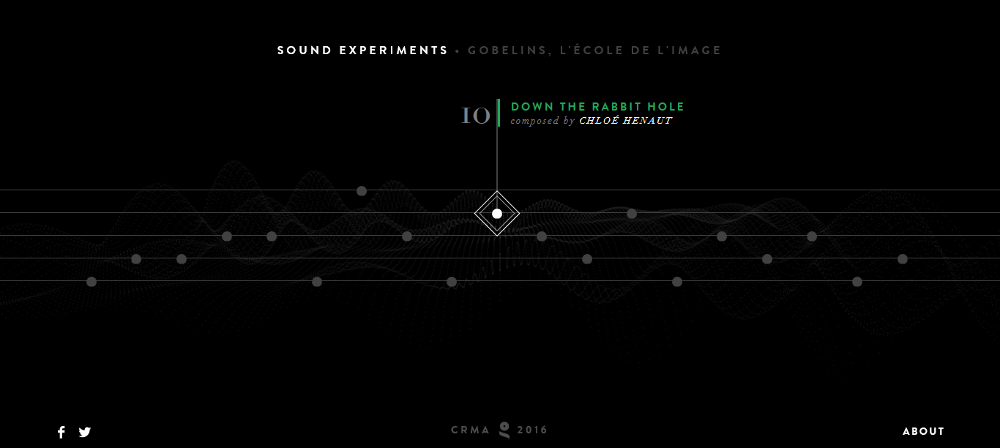

This website is in French, but, because they used conventions, I still know which button to click to access the site. Once on website, the image is interactive. You can click and drag to change the colors, view, and more.
Sound Experiments is set up to look like strings on a guitar. When your mouse hovers over a circle, a note plays and a small description of different projects appears. There are various projects to explore, however only some have an "x" to go back to the homepage whereas others you have to click the back button.
